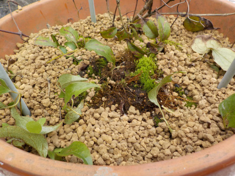
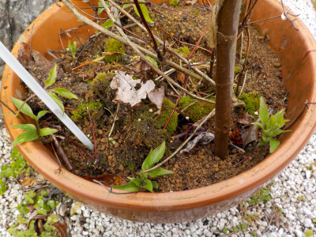
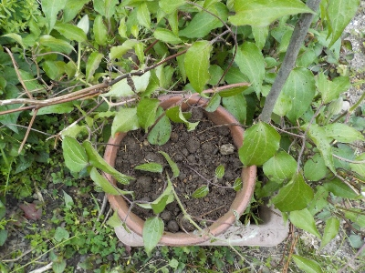
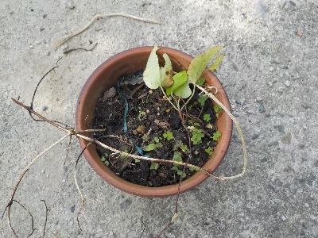
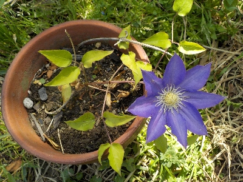

今の時期にやっていいかわからないですが、クレマチスのツル伏せをしました。
更新日 : 2020/09/27

冬で枯れる前に根っこが出るかな？
出たらうれしいです。
更新日 : 2020/09/27

冬で枯れる前に根っこが出るかな？
出たらうれしいです。
更新日 : 2021/03/14

ツル伏せした鉢の外周らへんに、何カ所も芽が出ました。沢山増えてうれしいです。
同じ鉢に株が沢山あってもしょうがないので、次は違う鉢かポットにツル伏せしようと思います。
更新日 : 2024/04/20

1本ツルが勢いよく伸びていたので、ツル伏せしました。
3節か4節埋めました。何箇所から根っこがでるかな。
更新日 : 2024/11/10

暑い時期に枯れたような状態になったので、いままで放置していました。
近頃、親株に緑が増えて調子がよさそうなので、ツルを切り離しました。
葉っぱが少ないのでちょっと心配です。
更新日 : 2025/05/04

まだ小さいですが開花しました。
花が小さいし花色が薄いです。来年は立派な花を咲かせたいです。
根伏せは初めてやって初成功しました。調子に乗ってドンドンやろうかな。